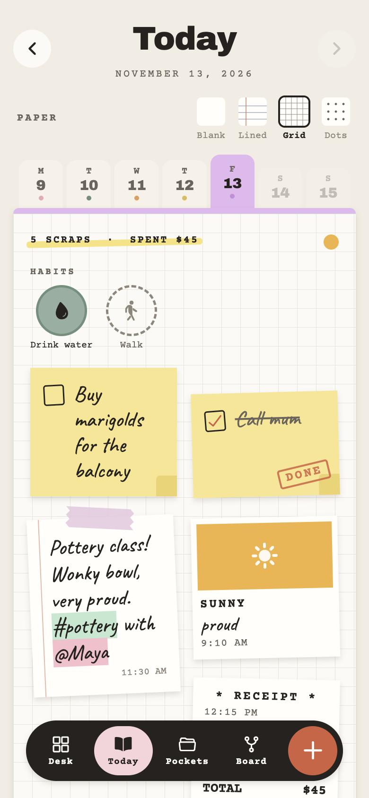
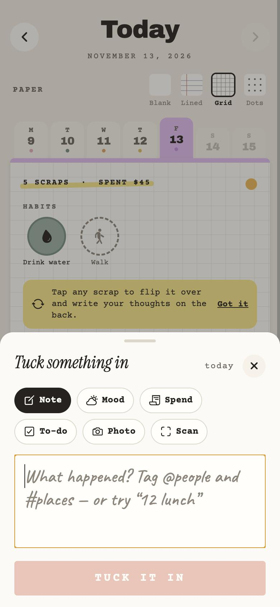
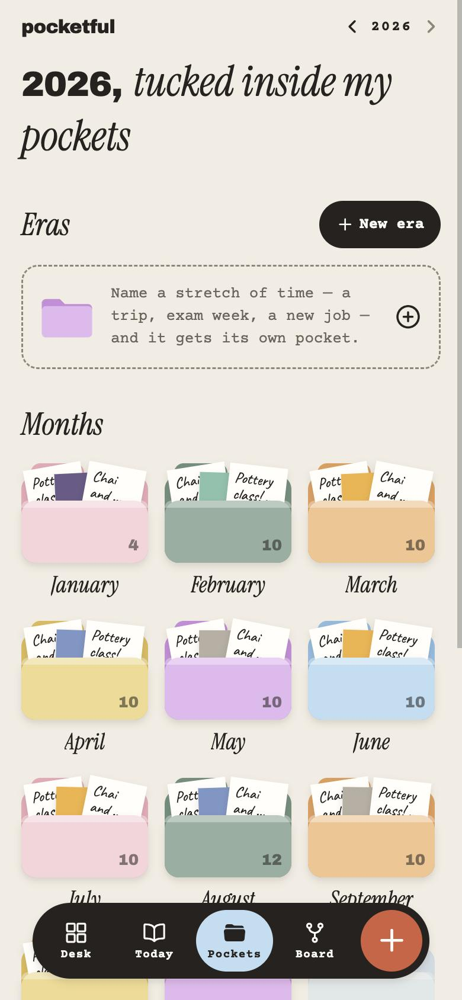

A scrapbook journal for your whole life.
Tap + to tuck in a scrap: a photo, a note, a mood, a receipt. It lands on today’s page. Your scraps file themselves into monthly pockets, and habits, moods, money and plans live on the same pages. The small stuff and the big stuff end up in one place.
Watch the two-minute tourfree, no account needed, and your pages stay on your phone
call mum ✓

Tap +, tuck in a scrap.
This is your phone, drawn in ink. Tap the orange + and pick what happened. The scrap draws itself, then lands on today’s page.
Tap a scrap to see its private back. Tap Pockets and the whole page files itself into this month.
scroll to play it, or tap the orange + yourself
One button, then it files itself.
There is nothing to set up. Open the app, tuck in your first scrap, and the pockets grow on their own.

It sits at the end of the bar on every screen. Snap, jot, log a mood or a spend, then tuck it in. A draft survives if you close the sheet by accident.
Every scrap is a piece of paper on today’s page. Flip one over to write on the back. The back stays private even if you share the front.

The year is twelve folders. Name an era, a trip, exam week, a new job, and those days get a pocket of their own.
What you can tuck in.
Everything in Pocketful is a scrap. A mood is a colour swatch, a habit is a stamp, a spend is a receipt. So they all fit on the same page.
Pockets
Every month gets a pocket, automatically. An era is a pocket you name yourself.
Goa trip · 9 daysMoods
A colour swatch for how today felt, plus one word. A week makes a stripe.
Habits
A stamp for each day you showed up. Goals can be “three times a week”, not every day.
Money
Type “12 lunch” and it’s filed. Spends sit on the page they belong to.
To-dos
- send invoice
- book pottery
- water the fern
Ask your pocket
Tuesday, sunset from the terrace. Before that, dinner on the 3rd. Every answer shows its scraps. No AI needed, it runs on the phone.
Us
A space for two. Days side by side, each other’s mood as weather, postcards, and the Fridge for chores and shared lists.
card
…and photos, notes and sticker cut-outs from anything you point the camera at.
Private by default.
- Stays on your phone: every scrap, photo and sticker, the back of each scrap, your habits, eras and goals. Ask and Morning Note count things locally, without a server.
- Goes online only when you act: signing in is optional. Share with Us sends that one scrap’s front, never its back.
- No account to make. No ads, no tracking, nothing to pay for.
A journal is the one place you should be able to write anything. So Pocketful doesn’t read your pages, doesn’t upload them, and doesn’t ask you to sign up before you can start.
STAYS ON THIS PHONEYour first page is almost ready.
Pocketful is free, with no store and no account. Leave your email and we’ll send one note the day it’s out.
- Androidfirst, Pixel tested
- iPhoneafter that
- Laptopafter that